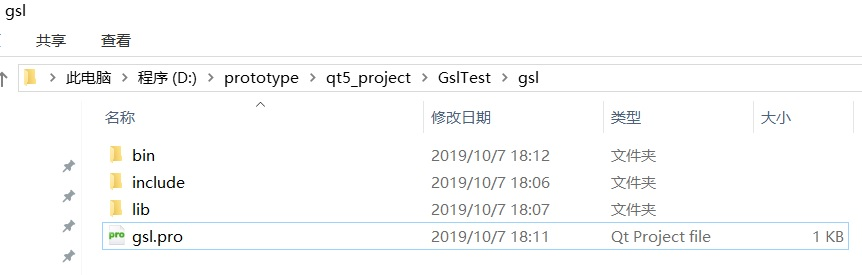
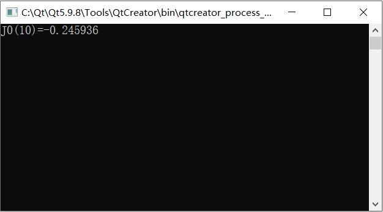

GNU科学库（英语：GSL - GNU Scientific Library），是一套为 C语言和 C++开发者提供的数值计算函数库，多用于应用数学和科学。软件属于自由软件，在 GNU 通用公共许可证下发布。
这套数值计算函数库提供了大量的数学运算功能，比如随机数生成器，特殊函数以及最小二乘拟合。有超过1000个函数包含在该数值计算库和扩展的测试包中。
下面介绍在Qt5环境中搭载GSL库的方法和步骤。
下载并安装Qt5
下载Qt5请参考Qt下载（多种下载通道+所有版本）。将下载并安装Qt5.9.8 LTS。
安装Qt5请参考图解Qt安装（Windows平台）。
环境配置
MinGW环境配置
MinGW（Minimalist GNU for Windows），又称mingw32，是将GCC编译器和GNU Binutils移植到Win32平台下的产物，包括一系列头文件（Win32API）、库和可执行文件。
另有可用于产生32位及64位Windows可执行文件的MinGW-w64项目，是从原本MinGW产生的分支。如今已经独立发展。
MinGW是从Cygwin（1.3.3版）基础上发展而来。Qt5.9.8使用MinGW 5.3编译器编译程序。
将mingw的bin目录添加进系统的环境变量，告诉系统已经安装了mingw编译器，并且可以被使用。Qt5自带的mingw的安装路径为C:\Qt\Qt5.9.8\5.9.8\mingw53_32，这里我们需要将C:\Qt\Qt5.9.8\5.9.8\mingw53_32\bin目录添加进入系统环境变量。
系统环境变量的设置方法为：【计算机】->【属性】->【高级系统设置】->【环境变量】->【系统变量】->【Path】。
MSYS环境配置
MSYS是bash，make，gawk和grep等GNU实用程序的集合，以允许构建依赖于传统UNIX工具的应用程序和程序。 它旨在补充MinGW和cmd shell的缺陷。
一个示例是构建一个使用自动工具构建系统的库。 用户通常会先运行“ ./configure”，然后运行“ make”来构建它。 配置外壳程序脚本需要Windows系统上不存在的外壳程序脚本解释器，但由MSYS提供。
一个常见的误解是MSYS是“ Windows上的UNIX”，MSYS本身不包含编译器或C库，因此不能将UNIX程序神奇地移植到Windows上，也不能提供任何特定于UNIX的功能，例如case- 敏感文件名。 寻找此类功能的用户应改用Cygwin或Microsoft的Interix。
msys的下载网址为：
msys+7za+wget+svn+git+mercurial+cvs-rev13.7z
上述网址给出的是一个压缩包，直接解压就可以使用。
将msys+7za+wget+svn+git+mercurial+cvs-rev13.7z解压到C:\Qt\Qt5.9.8\5.9.8\mingw53_32。
仅将msys解压后并不能直接使用，因为对于msys而言，它还不知道mingw编译器所处位置，因此需要对msys的环境进行配置。首先需要在msys的路径下创建一个名为mingw的空文件夹，路径为C:\Qt\Qt5.9.8\5.9.8\mingw53_32\msys\mingw。然后修改
C:\Qt\Qt5.9.8\5.9.8\mingw53_32\msys\etc\fstab中的内容,如下所示。
1 | C:/Qt/Qt5.9.8/Tools/mingw530_32 /mingw |
通过上述环境配置，当启动msys时，将Qt5的mingw编译直接挂载到/mingw目录下。
双击msys文件夹下msys.bat即可运行msys，使用cd命令进入/mingw目录下，我们就会发现此目录下文件就是C:\Qt\Qt5.9.8\Tools\mingw530_32对应的文件。
跳转到gsl-2.6文件夹，即可开始编译链接gsl。
下载并编译安装GSL
从此处 http://ftpmirror.gnu.org/gsl/ 下载最新的GSL-2.6。然后采用如下步骤编译GSL：
- 运行msys，进入GSL源文件所在目录
- ./configure
- make -j8
- make install
Qt调用GSL库
创建Qt工程
为了测试GSL数学库能够在Qt环境中运行，新建一个控制台工程进行测试。
新建控制台应用程序的步骤为：【Welcome】->【New Project】->【Application】->【Qt Console Application】->【Choose】->【将工程命名为GslTest】。
引用GSL库
在GslTest项目的工程目录内，新建名为gsl的文件夹。该文件夹的内容如图1所示。

gsl文件夹下lib、include、bin中内容为编译安装GSL过程中生成的头文件、库文件及生成的相关exe文件，主要从C:\Qt\Qt5.9.8\5.9.8\mingw53_32\msys路径下提取。
此外，在gsl目录下新建gsl.pro文件，其内容如下：
1 | # 宏定义项，指明采用GSL，因为有些函数需要使用dll |
然后在GslTest的项目文件GslTest.pro末尾引用gsl.pro文件，如下所示。
1 | include($$PWD/gsl/gsl.pro) |
修改GslTest的main.cpp
1 | #include <QCoreApplication> |
运行GslTest

参考链接
- Qt下载（多种下载通道+所有版本）,by C语言中文网.
- 图解Qt安装（Windows平台）,by C语言中文网.
- GSL - GNU Scientific Library,by gnu.
- QT5环境下配置GSL数学库,by 木小猿.
- GNU科学库,by wikipedia.
- 【ICPC-455】C++ 常用数学函数库,by 陈国林.
- MinGW,by wikipedia.
- MinGW和MSYS区别和关系以及MinGW&MSYS在Win7中安装并编译x264,by FreeApe.
- 最强数学库GSL(GNU Scientific Library) Qt环境下部署,by 尘中远.
- Qt5.9.6使用MSVC（VS2017）开发环境搭建,by KirkSong.
- QT - OSG 开发环境配置,by 程序小哥.
- GSL with CMake build support,by ampl.
- 在Visual Studio中使用GNU Scientific Library (GSL),by NULL_BOT.